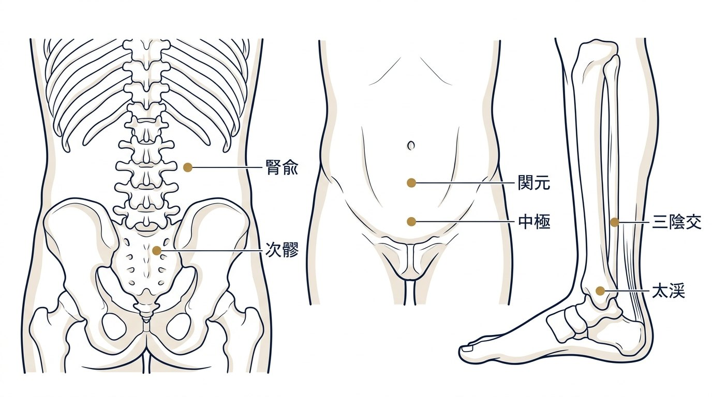

産後尿失禁（出産後の尿漏れ・骨盤底筋訓練併用）の鍼灸
出産後のくしゃみや抱っこによる尿漏れ（産後尿失禁）に対し、骨盤底筋訓練（PFMT）と併用して回復を後押しする産後鍼灸ケア。


院長YouTube解説・関連動画
▼ 詳しく知りたい項目だけタップして開けます（全項目の医学解説を収録）
01. 原因とメカニズム
なぜ症状が起きるのか・鍼灸の作用機序を読む
▼
01. 原因とメカニズム
なぜ症状が起きるのか・鍼灸の作用機序を読む
妊娠中の子宮増大による骨盤底への持続負荷と、経腟分娩時の骨盤底筋群・陰部神経の伸展損傷により、尿道閉鎖機能が低下して産後尿失禁が生じます。2026年4月Frontiers in Medicineに掲載された9件のRCT（計865名）のメタ解析では、標準的な骨盤底筋訓練（PFMT）に鍼治療を併用することで、PFMT単独と比べ総有効率が有意に高く（RR 1.20、95% CI 1.13〜1.27）、パッドテストやICI-Q-SFスコアの改善傾向が報告されています（出典: https://pubmed.ncbi.nlm.nih.gov/42006878/）。（出典文献）
なぜ鍼灸で改善へ向かうのか？（作用機序の図解）
産後尿失禁（出産後の尿漏れ・骨盤底筋訓練併用）に対する鍼灸は、視床下部-下垂体-卵巣（HPO）軸と骨盤内血流の調整機序を通じて、お体本来の回復力を引き出します。
骨盤内臓器と同じ脊髄分節を共有する腰仙部や下肢経穴へ、体質に合わせた刺激を行います。
骨盤周囲の自律神経反射を介して子宮・卵巣周囲の血流を促し、冷えやうっ血を和らげます。
ホルモン変動で過敏になった視床下部を鎮静し、ほてり・発汗・気分の揺らぎを穏やかにします。
婦人科治療とも協調しながら、月経・妊娠・更年期それぞれの負担を軽くする土台を整えます。
02. よくあるお悩み
このような症状はありませんか？（1項目）
▼
02. よくあるお悩み
このような症状はありませんか？（1項目）
- ✓出産後、くしゃみ・咳・笑い・赤ちゃんを抱き上げた拍子に尿が漏れる ・骨盤底筋体操を続けているが、なかなかスッキリ改善しない ・授乳中で薬を使いにくく、身体に優しい方法でケアしたい ・産後の腰痛や骨盤周囲の違和感・疲労感もあわせて整えたい
03. 当院の施術アプローチ
施術の進め方・改善のポイントを見る
▼
03. 当院の施術アプローチ
施術の進め方・改善のポイントを見る
04. ツボ詳細・セルフケア一覧
腎・泌尿器・排尿トラブル・透析サポートのツボ図解（6穴）
▼
04. ツボ詳細・セルフケア一覧
腎・泌尿器・排尿トラブル・透析サポートのツボ図解（6穴）
実際の施術ではお一人おひとりの体質・症状に合わせて選穴しますが、過活動膀胱・尿失禁・前立腺症状・CKD/透析QOLの標準治療併用ケアの臨床でよく用いられる代表的なツボの目安です。
| ツボ名 | 位置の目安 | 主な狙い | セルフケアの注意点 |
|---|---|---|---|
| 腎兪（じんゆ） | 腰のくびれの高さ、背骨から指2本分外側 | 腎・泌尿器周囲の自律神経と冷え・倦怠感ケア | 腰部を温めることで夜間頻尿の負担も和らぎます。 |
| 次髎（じりょう） | 仙骨の2番目のくぼみ（お尻の上中央付近） | 仙髄排尿神経（S2〜S4）を介した膀胱機能調整の最重要穴 | 腹圧性・切迫性尿失禁や過活動膀胱の国際RCTでも定番です。 |
| 関元（かんげん） | おへそから指4本分下 | 下腹部の冷え改善・骨盤内の循環サポート | 排尿を済ませた状態で優しく温めます。 |
| 中極（ちゅうきょく） | 恥骨のすぐ上、おへそから指5本分下 | 膀胱の過敏性・残尿感・頻尿の調整 | 強く押し込まず軽く手を当てる・温める程度にします。 |
| 三陰交（さんいんこう） | 内くるぶしの上から指4本分上 | 脛骨神経を介した膀胱過活動の鎮静・睡眠の質改善 | 透析中の方はシャント腕を避け非透析日に安全に行います。 |
| 太渓（たいけい） | 内くるぶしとアキレス腱の間 | 腎経の原穴として冷え・むくみ・夜間頻尿の土台づくり | 足首を冷やさない工夫と合わせてケアします。 |
05. 医学的根拠・国際査読論文（PubMed / Cochrane）
科学的エビデンス・出典リンク一覧（4件）
▼
05. 医学的根拠・国際査読論文（PubMed / Cochrane）
科学的エビデンス・出典リンク一覧（4件）
国際的な医学データベース（PubMed・Cochrane等）で報告されている過活動膀胱・尿失禁・前立腺症状・CKD/透析QOLの標準治療併用ケア領域の代表的な査読済み鍼灸研究をまとめています（標準治療との併用や研究上の限界を含めて正確に掲載）。
| 年・研究デザイン | 対象・規模 | 主な結果 | 限界・出典 |
|---|---|---|---|
| 2016年 Cochraneレビュー | 原発性月経困難症 42 RCTs（n=4,640） | NSAIDs比較で疼痛緩和率（OR 4.99）・有害事象減少（OR 0.10）を示唆。シャム比較は一貫せず。 | エビデンス確実性は低〜非常に低。鎮痛薬の補完として位置づけ。 Cochrane (PMID: 27087494) |
| 2013年 Cochraneレビュー | 更年期ホットフラッシュ 16 RCTs（n=1,155） | 無治療比で頻度（SMD -0.50）・重症度（SMD -0.54）を中等度改善、シャム比でも重症度小幅改善。 | ホルモン補充療法（HT）より効果小。HT不適応時の補完選択肢。 Cochrane (PMID: 23897589) |
| 2018年 Cochraneレビュー | PMS・PMDD 5 RCTs（n=277） | シャム比較で気分・身体症状・QOL改善を示唆、有害事象の群間差なし。 | 小規模・試験数少（GRADE低〜非常に低）。 Cochrane (PMID: 30105749) |
| 2018年 大規模多施設RCT | 体外受精（IVF）848名（豪州・NZ 16施設） | 胚移植前後の短期3回鍼 vs シャムで生児出生率18.3% vs 17.8%（RR 1.02）と有意差なし。 | 出生率向上の直接根拠は未確立。ストレス・冷えの補完ケアとして説明。 JAMA (PMID: 29800212) |
参考文献・出典
- 一次論文・公的出典：産後尿失禁（出産後の尿漏れ・骨盤底筋訓練併用）の根拠文献
- 2016年 Cochraneレビュー（原発性月経困難症 42 RCTs（n=4,640））— Cochrane (PMID: 27087494)
- 2013年 Cochraneレビュー（更年期ホットフラッシュ 16 RCTs（n=1,155））— Cochrane (PMID: 23897589)
- 2018年 Cochraneレビュー（PMS・PMDD 5 RCTs（n=277））— Cochrane (PMID: 30105749)
- 2018年 大規模多施設RCT（体外受精（IVF）848名（豪州・NZ 16施設））— JAMA (PMID: 29800212)
06. よくある質問（FAQ）
よくあるご質問を見る（1件）
▼
06. よくある質問（FAQ）
よくあるご質問を見る（1件）
Q. 産後どのくらいから通えますか？
産後1か月健診で主治医から異常がないと確認された後からご相談いただけます。体調に合わせて無理のない体位（横向き等）で施術します。 Q. 骨盤底筋体操と組み合わせた方がよいですか？ A. はい。国際メタ解析でも骨盤底筋訓練（PFMT）との併用で高い有効率が示されています。日常で続けやすい呼吸・体操のポイントもあわせてお伝えします。
あわせて読まれる関連疾患（女性のお悩み）
閉経前後のホルモン急減によるほてり・不眠・不安に対し、女性ホルモン関連のツボと七情に応じたお灸で心身を調える施術です。
胎盤の端が内子宮口から2cm以内にある状態です。産婦人科の定期管理を最優先とし、産後回復期のケアをサポートします。
胎盤が子宮口を覆うハイリスク妊娠状態です。妊娠中は専門医の安静管理が最優先で、当院は産後回復期に対応します。
妊娠20週以降〜産後12週に高血圧が生じる疾患です。産婦人科管理を最優先とし、産後や医師許可下で体調を整えます。
妊娠中・分娩前に胎盤が剥がれる産科救急疾患です。緊急医療が最優先であり、当院は産後回復期のケアのみ対応します。
子宮を支える骨盤底筋のゆるみで子宮が下がる状態です。婦人科治療や骨盤底筋体操と併用し、巡りと体調を整えます。
CLINICAL RECOVERY CASES
✨ 実際の臨床改善事例・回復経過を見る
銀座本院をはじめ各院での実際の改善事例を症状別に絞り込んでご確認いただけます。
おひとりで悩まず、まずはご相談ください
銀座本院・川口・大宮・横浜・博多・田無の各院でご予約を承っております。